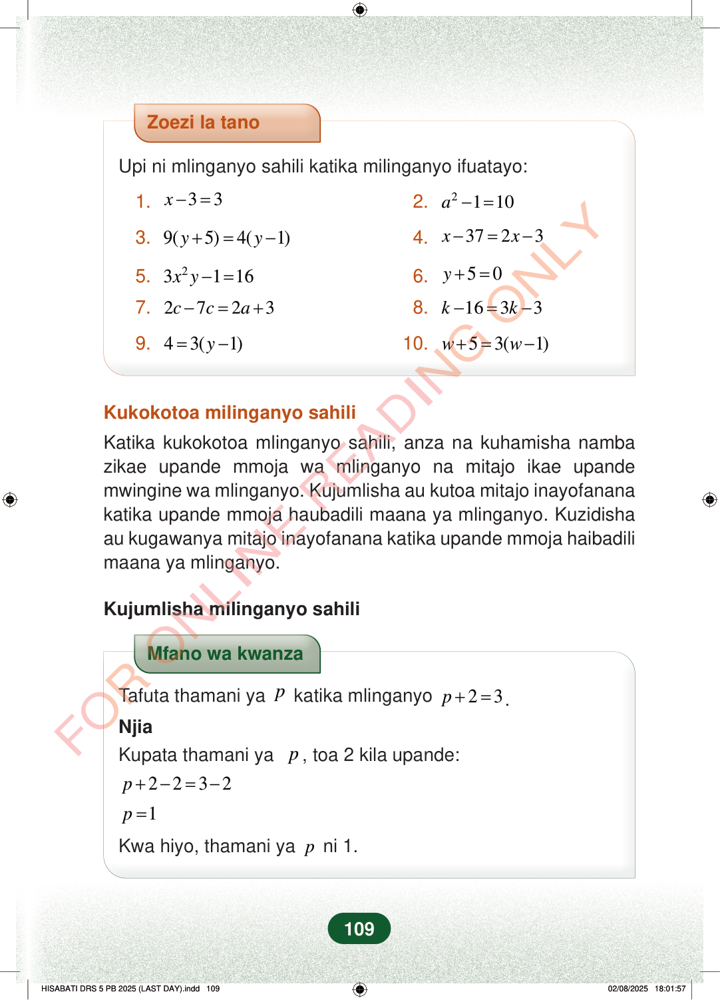

Zoezi la tanoUpi ni mlinganyo sahili katika milinganyo ifuatayo:1.33x−=2.2110a−=3.9(5)4(1)yy+=−4.3723xx−=−5.23116xy−=6.50y+=7.2723cca−=+8.1633kk−=−9.43(1)y=−10.53(1)ww+=−Kukokotoa milinganyo sahiliKatika kukokotoa mlinganyo sahili, anza na kuhamisha nambazikae upande mmoja wa mlinganyo na mitajo ikae upandemwingine wa mlinganyo. Kujumlisha au kutoa mitajo inayofananakatika upande mmoja haubadili maana ya mlinganyo. Kuzidishaau kugawanya mitajo inayofanana katika upande mmoja haibadilimaana ya mlinganyo.Kujumlisha milinganyo sahiliMfano wa kwanzaTafuta thamani yapkatika mlinganyo23p+=.NjiaKupata thamani yap, toa 2 kila upande:2232p+−=−1p=Kwa hiyo, thamani yapni 1.109
Zoezi la tano
Upi ni mlinganyo sahili katika milinganyo ifuatayo:
1. 3 3 x −= 2. 2 1 10 a −=
3. 9( 5) 4( 1) y y + = − 4. 37 2 3 x x − = −
5. 2 3 1 16 x y −= 6. 5 0 y + =
7. 2 7 2 3 c c a − = + 8. 16 3 3 k k − = −
9. 4 3( 1) y = − 10. 5 3( 1) w w + = −
Kukokotoa milinganyo sahili
Katika kukokotoa mlinganyo sahili, anza na kuhamisha namba zikae upande mmoja wa mlinganyo na mitajo ikae upande mwingine wa mlinganyo. Kujumlisha au kutoa mitajo inayofanana katika upande mmoja haubadili maana ya mlinganyo. Kuzidisha au kugawanya mitajo inayofanana katika upande mmoja haibadili maana ya mlinganyo.
Kujumlisha milinganyo sahili
Mfano wa kwanza
Tafuta thamani ya p katika mlinganyo 2 3 p + = . Njia Kupata thamani ya p , toa 2 kila upande:
2 2 3 2 p + − = −
1 p =
Kwa hiyo, thamani ya p ni 1.
109
Zoezi la tano linauliza utambue mlinganyo sahihi katika mifano kumi ya milinganyo yenye herufi kama x, y, a, c na w.Zoezi la tanoUpi ni mlinganyo sahili katika milinganyo ifuatayo:1.x - 3 = 32.<math><mrow><msup><mi>a</mi><mn>2</mn></msup><mo>−</mo><mn>1</mn><mo>=</mo><mn>10</mn></mrow></math>3.9(y + 5) = 4(y - 1)4.x - 37 = 2x - 35.3x^2y - 1 = 166.y + 5 = 07.2c - 7c = 2a + 38.k - 16 = 3k - 39.4 = 3(y - 1)10.w + 5 = 3(w - 1)Kukokotoa milinganyo sahiliKatika kukokotoa mlinganyo sahili, anza na kuhamisha namba zikae upande mmoja wa mlinganyo na mitajo ikae upande mwingine wa mlinganyo.Kujumlisha au kutoa mitajo inayofanana katika upande mmoja haubadili maana ya mlinganyo.Kuzidisha au kugawanya mitajo inayofanana katika upande mmoja haibadili maana ya mlinganyo.Kujumlisha milinganyo sahiliMfano wa kwanza unaonyesha jinsi ya kupata thamani ya p katika p + 2 = 3 kwa kutoa 2 kila upande. Mwisho wake, p ni 1.Mfano wa kwanzaTafuta thamani ya p katika mlinganyo <math><mrow><mi>p</mi><mo>+</mo><mn>2</mn><mo>=</mo><mn>3</mn></mrow></math>.NjiaKupata thamani ya p, toa 2 kila upande:p + 2 - 2 = 3 - 2p = 1Kwa hiyo, thamani ya p ni 1.